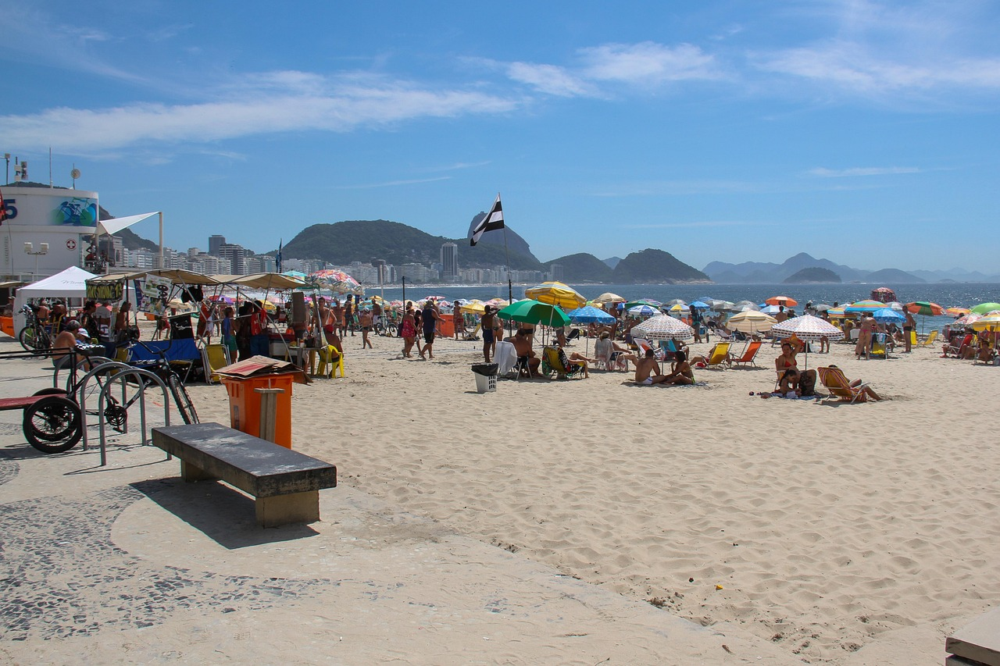

Pontos Turísticos
Descubra os locais mais famosos e visitados da cidade maravilhosa.
Cristo Redentor
Um dos principais cartões-postais do Brasil, com vista panorâmica da cidade.
Pão de Açúcar
Famoso teleférico e vista deslumbrante do alto do morro.
Outros Lugares
